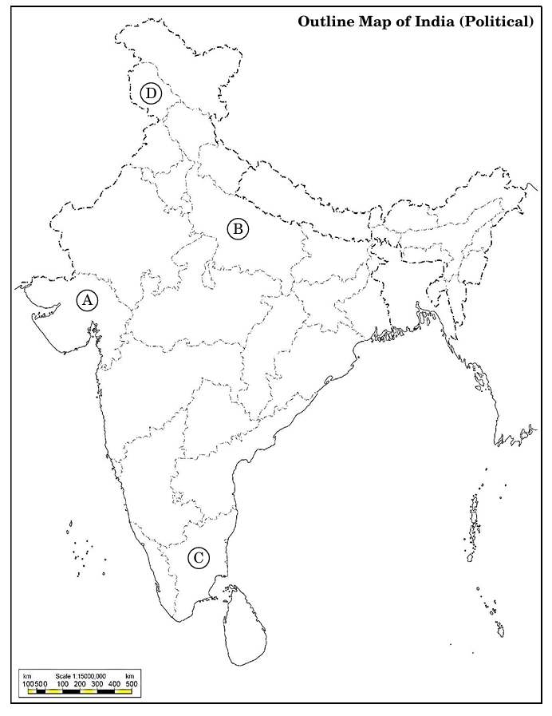
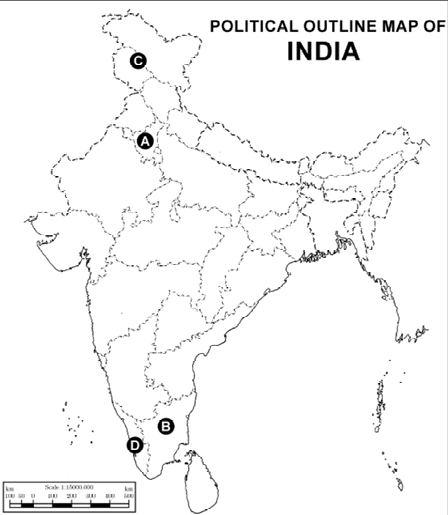
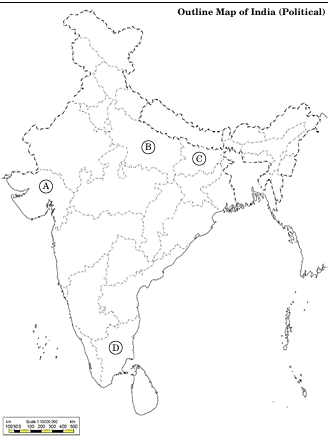
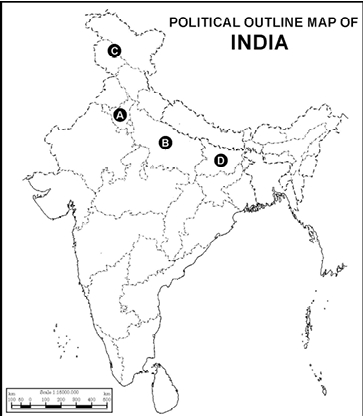
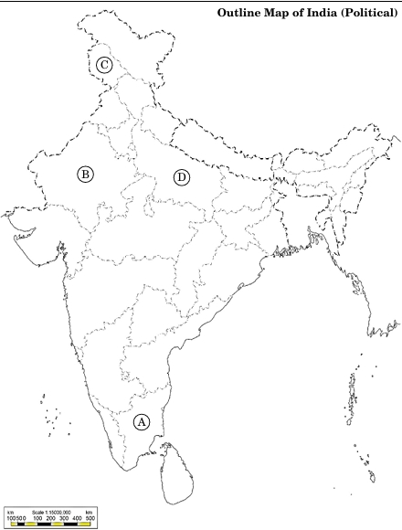
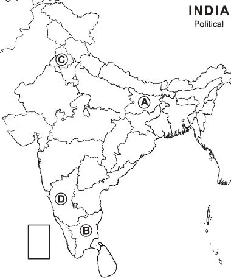
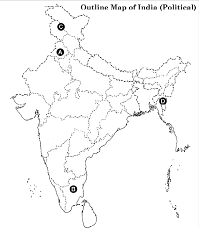
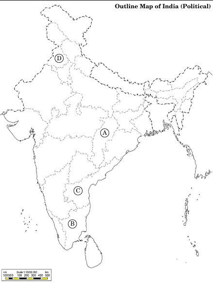
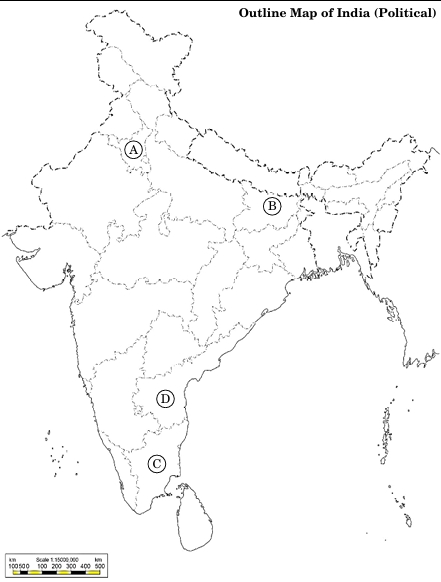

Map Based Questions – Class 12 Political Science
Indian Political Maps • States • Union Territories • Important Leaders & Events
★ India Political Map – All States & Union Territories
Use this map to learn and revise the locations of all Indian States and Union Territories before attempting the questions below.
(Teacher / students can zoom the image in the browser for detailed study.)

1 Question 1
On the given political outline map of India, four States have been marked as A, B, C and D. Identify these States on the basis of the information given below and write their correct names along with the respective serial number of the information used and the concerned alphabets given in the map as per the following format:
| Serial number of the information used | Concerned alphabet in the map | Name of the State |
|---|---|---|
| (i) | ||
| (ii) | ||
| (iii) | ||
| (iv) |
The information is as follows:
- The State where Bahujan Samaj Party formed its first government.
- The State to which K. Kamaraj belonged.
- The latest Union Territory of the Indian Union.
- The State from where Bharatiya Janata Party began its Rath Yatra.
Answer – Question 1
| Serial number of the information used | Concerned alphabet in the map | Name of the State / Union Territory |
|---|---|---|
| (i) | B | Uttar Pradesh |
| (ii) | C | Tamil Nadu |
| (iii) | D | Ladakh |
| (iv) | A | Gujarat |
2 Question 2
In the given political outline map of India, four states have been marked as A, B, C and D. Identify these states on the basis of the information given below and write their correct names in your Answer Book along with the respective serial number of the information used and the concerned alphabet as per the format that follows:
| S. No. of the Information used | Concerned Alphabet | Name of the State |
|---|---|---|
| (i) | ||
| (ii) | ||
| (iii) | ||
| (iv) |
The information is as follows:
- The State which was not under the rule of the Congress Party in 1952.
- The State where the Congress Party could not win majority in 1957.
- The State from where K. Kamaraj, a veteran leader of the Congress Party, lost election in 1967.
- The State from where the phrase ‘Aaya Ram, Gaya Ram’ originated.
Answer – Question 2
| S. No. of the Information used | Concerned Alphabet | Name of the State / Union Territory |
|---|---|---|
| (i) | C | Jammu and Kashmir |
| (ii) | D | Kerala |
| (iii) | B | Tamil Nadu |
| (iv) | A | Haryana |
3 Question 3
In the given political outline map of India, four States have been marked as A, B, C and D. Identify these States on the basis of the information given below and write their correct names in your answer‑book along with the respective serial number of the information used and the concerned alphabets given in the map as per the following format:
| Serial number of the information used | Concerned alphabet in the map | Name of the State |
|---|---|---|
| (i) | ||
| (ii) | ||
| (iii) | ||
| (iv) |
The information is as follows:
- The State to which B. P. Mandal, the Chairman of Mandal Commission, belonged.
- The State where Somnath Temple is situated.
- The State which was most concerned about the ethnic problems in Sri Lanka.
- The State where Bahujan Samaj Party formed the government.
Answer – Question 3
| Serial number of the information used | Concerned alphabet in the map | Name of the State / Union Territory |
|---|---|---|
| (i) | C | Bihar |
| (ii) | A | Gujarat |
| (iii) | D | Tamil Nadu |
| (iv) | B | Uttar Pradesh |
4 Question 4
In the given outline political map of India, four states have been marked as A, B, C and D. With the help of the information given below, identify them and write their correct names in your answer‑book along with the serial number of the information used and the related alphabet in the map as per the format given below:
| S. No. of the information used | Related alphabet given in the Map | Name of the State |
|---|---|---|
| (i) | ||
| (ii) | ||
| (iii) | ||
| (iv) |
The information is as follows:
- The State to which Jai Prakash Narain belonged.
- The State where Indian National Congress won most of the Lok Sabha seats in 1977 elections.
- The State from where Raj Narain contested the Lok Sabha seat against Indira Gandhi in 1977 election.
- The State where Janata Party won all the Lok Sabha seats in 1977 election.
Answer – Question 4
| S. No. of the information used | Related alphabet given in the Map | Name of the State / Union Territory |
|---|---|---|
| (i) | B | Bihar |
| (ii) | D | Andhra Pradesh |
| (iii) | A | Uttar Pradesh |
| (iv) | C | Haryana |
5 Question 5
In the given political outline map of India, four States have been marked as A, B, C and D. Identify these States on the basis of the information given below and write their correct names in your answer‑book along with the respective serial number of the information used and the concerned alphabets given in the map as per the following format:
| Serial number of the information used | Concerned alphabet in the map | Name of the State |
|---|---|---|
| (i) | ||
| (ii) | ||
| (iii) | ||
| (iv) |
The information is as follows:
- The State with the largest number of seats in its Legislative Assembly.
- The State to which the first Indian Governor General (1948–1950) belonged.
- The State where the Congress Party did not get majority in 1967 Assembly polls, but formed a government with the help of others.
- The region which is a Union Territory now.
Answer – Question 5
| Serial number of the information used | Concerned alphabet in the map | Name of the State / Union Territory |
|---|---|---|
| (i) | B | Uttar Pradesh |
| (ii) | A | Tamil Nadu |
| (iii) | D | Madhya Pradesh |
| (iv) | C | Jammu and Kashmir |
6 Question 6
In the given political map of India, four states have been marked as A, B, C and D. Identify these states on the basis of the information given below and write their correct names in your answer book along with the respective serial number of the information used and the concerned alphabet as per the format that follows.
| Sr. No. of the Information used | Concerned alphabet | Name of the state |
|---|---|---|
| i | ||
| ii | ||
| iii | ||
| iv |
The information is as follows:
- The state to which Raj Kumari Amrit Kaur, Health Minister in Nehru's Cabinet, belonged.
- The state to which former Congress President, S. Nijalingappa, belonged.
- The state where Karpoori Thakur was the Chief Minister.
- The state to which political party DMK belongs.
Answer – Question 6
| Sr. No. of the Information used | Concerned alphabet | Name of the state |
|---|---|---|
| i | C | Punjab |
| ii | D | Karnataka |
| iii | A | Bihar |
| iv | B | Tamil Nadu |
7 Question 7
In the given political outline map of India, four States/Union Territories have been marked as A, B, C and D. Identify these States/Union Territories on the basis of the information given below and write their correct names in your answer‑book along with the respective serial number of the information used and the concerned alphabets given in the map as per the following format:
| Serial number of the information used | Concerned alphabet given in the map | Name of the State |
|---|---|---|
| (i) | ||
| (ii) | ||
| (iii) | ||
| (iv) |
The information is as follows:
- The State to which the Chairman of the Mandal Commission, B. P. Mandal, belonged.
- The State where Bahujan Samaj Party formed its first government.
- The Union Territory which was constituted in 2019.
- The State from which the political party Dravida Munnetra Kazhagam (DMK) originated.
Answer – Question 7
| Serial number of the information used | Concerned alphabet given in the map | Name of the State / Union Territory |
|---|---|---|
| (i) | D | Bihar |
| (ii) | B | Uttar Pradesh |
| (iii) | A | Ladakh |
| (iv) | C | Tamil Nadu |
8 Question 8
In the given political outline map of India, four states have been marked as A, B, C and D. Identify these states on the basis of the information given below and write their correct names in your answer book along with the respective serial number of the information used and the concerned alphabets given in the map as per the format that follows:
| Sr. No. of the information used | Concerned Alphabet | Name of the State |
|---|---|---|
| i. | ||
| ii. | ||
| iii. | ||
| iv. |
The information is as follows:
- The state which has been bifurcated into two Union Territories recently.
- The state where Rajiv Gandhi – Longowal Accord was signed.
- The state to which Laldenga belonged.
- The state from where the Dravidian Movement started.
Answer – Question 8
| Sr. No. of the information used | Concerned Alphabet | Name of the State / Union Territory |
|---|---|---|
| i. | C | Jammu and Kashmir (former state) |
| ii. | A | Punjab |
| iii. | D | Mizoram |
| iv. | B | Tamil Nadu |
9 Question 9
In the given political outline map of India, four States have been marked as A, B, C and D. Identify these States on the basis of the information given below and write their correct names in your answer‑book along with the respective serial number of the information used and the concerned alphabets given in the map as per the following format:
| Serial number of the information used | Concerned alphabet in the map | Name of the State |
|---|---|---|
| (i) | ||
| (ii) | ||
| (iii) | ||
| (iv) |
The information is as follows:
- The State which was called ‘Madras’ at the time of Independence.
- The State formed on the basis of imbalanced development.
- The State which was partitioned in 1947.
- The first State created in 1952.
Answer – Question 9
| Serial number of the information used | Concerned alphabet in the map | Name of the State / Union Territory |
|---|---|---|
| (i) | B | Tamil Nadu |
| (ii) | A | Chhattisgarh |
| (iii) | D | Punjab |
| (iv) | C | Andhra Pradesh |
10 Question 10
In the given political outline map of India, four States have been marked as A, B, C and D. Identify these States on the basis of information given below and write their correct names in your answer‑book along with the respective serial number of the information used and the concerned alphabets given in the map as per the following format:
| Sr. no. of the information used | Concerned alphabet in the map | Name of the State |
|---|---|---|
| (i) | ||
| (ii) | ||
| (iii) | ||
| (iv) |
The information is as follows:
- The State related to V. V. Giri, the former President of India.
- The State related to the Congress leader, K. Kamaraj.
- The State from where the phrase, “Aya Ram, Gaya Ram” originated.
- The State which faced the most acute food crisis in 1965–1967.
Answer – Question 10
| Sr. no. of the information used | Concerned alphabet in the map | Name of the State / Union Territory |
|---|---|---|
| (i) | D | Odisha |
| (ii) | C | Tamil Nadu |
| (iii) | A | Haryana |
| (iv) | B | Bihar |